سرطان الرئة
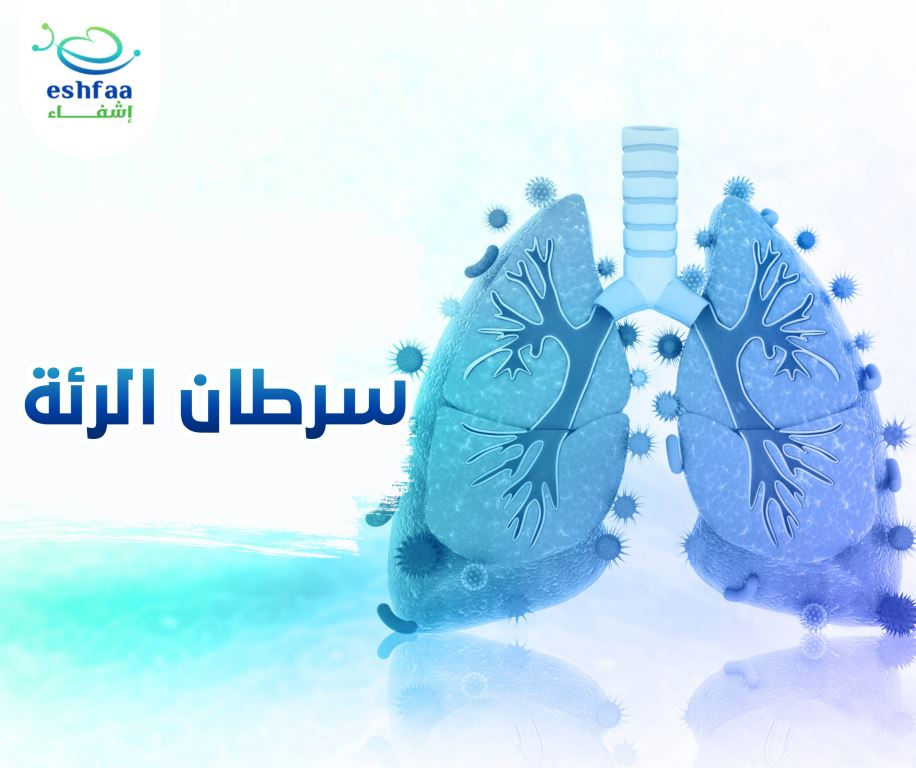
هل تعرف ما هو سرطان الرئة؟ وما ومدي خطورته؟ كيف يمكن أن تصاب به؟ ما هى أعراضه؟ كم فرصة الشفاء
منه؟
كل ذلك وأكثرعن سرطان الرئة سنستعرضه بالتفصيل في هذا المقال، فهيا أبدأ معنا ولا تتردد.
ما هو سرطان الرئة؟
سرطان الرئة هو نوع من أكثر أنواع السرطانات الخبيثة انتشارا،والذي يصيب الرئتين وينتشر داخلهما
ويمكنه بعد ذلك أن يهاجروينتشرالى باقي أعضاء الجسم، وشأنه شأن الأورام الخبيثة، يبدأ باضطراب في
نمو خلايا الرئتين والقصبة الهوائية، حيث تنمو وتنقسم بشكل متسارع غير طبيعي، مما يؤدي الى انتشار
الخلايا السرطانية وتكون الأورام داخل الرئتين.
ويعتبر سرطان الرئة من السرطانات القاتلة، حيث يصنف من أكثر أنواع السرطانات التي تؤدي للوفاة،
لما لا وهو يدمرخلايا الرئتين الاسفنجيتين اللتان تمدان الجسم بالأكسجين وتخلصه من ثاني أكسيد
الكربون ليستطيع القيام بوظائفه الحيوية، ويفقدهما القدرة على أداء دورهما.
والمسؤول الأكبر عن سرطان الرئة في أكثر من 90% من الحالات هو التدخين، ويمكن أيضا أن يصاب به
الاشخاص الغير مدخنين، ولكن فرصة الاصابة ترتفع مع زيادة فترة التدخين.
ما هى أعراض سرطان الرئة؟
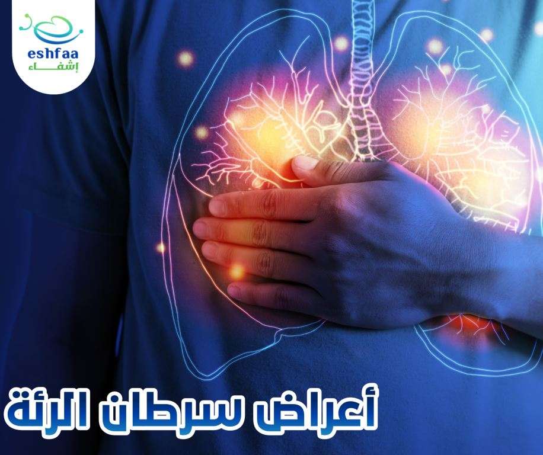
قد يكون سرطان الرئة من السرطانات الصامتة التي يمكن أن تتطور دون ظهور أي أعراض حتى تصل لمراحل
متطورة خطيرة من المرض، وذلك من العوامل التي تؤدي لتصنيفه ضمن الأمراض شديدة الخطورة.
وهناك بعض الأعراض التي يمكن أن تظهر في المراحل الأولى من المرض والتى تشير وجود الاصابة:
- ضيق في النفس
- سعال مزمن بدون تحسن، بل يسوء أكثر.
- اصطحاب السعال ببلغم أو دم أحيانا.
- بحه وتغير في الصوت.
- ألم في الصدر يزداد مع التنفس أو السعال.
- صوت صفير في الصدر مع التنفس.
- تكرر العدوى مثل التهاب الشعب الهوائية والالتهاب الرئوي.
- ضعف وارهاق عام.
- فقدان للشهية وفقدان للوزن.
ولكن هناك بعض الأعراض التي تعتبر نذير خطر عند ظهورها، فتشير الى وصول سرطان الرئة لمرحلة متقدمة وتشيرأيضا الى انتشاره باجزاء اخرى من الجسم، ويعتمد ظهور هذه الأعراض على الجزء الذى انتشر به المرض:
- وجود كتل حول منطقة الرقبة والترقوة.
- صداع.
- دوخة.
- اضطراب في التوازن.
- تنميل في الأطراف.
- ألم في منطقة الكتف.
- الام في عظام الظهر.
- انتفاخ وتورم في الوجه والجزء العلوي من الجسم.
- اصفرار في العيون والجلد.
وهناك ايضا بعض الاعراض التي قد تظهر نتيجة افراز الورم لمواد تشبه الهرمونات والتي تؤدي لخلل في بعض وظائف الجسم، ومن هذه الأعراض:
- ضعف في العضلات.
- عثيان وقئ.
- ارتفاع ضغط الدم.
- ارتفاع سكر الدم.
- نوبات من الصرع.
والان وبعد أن تعرفنا على الأعراض، فما هى أسباب الاصابة بسرطان الرئة؟
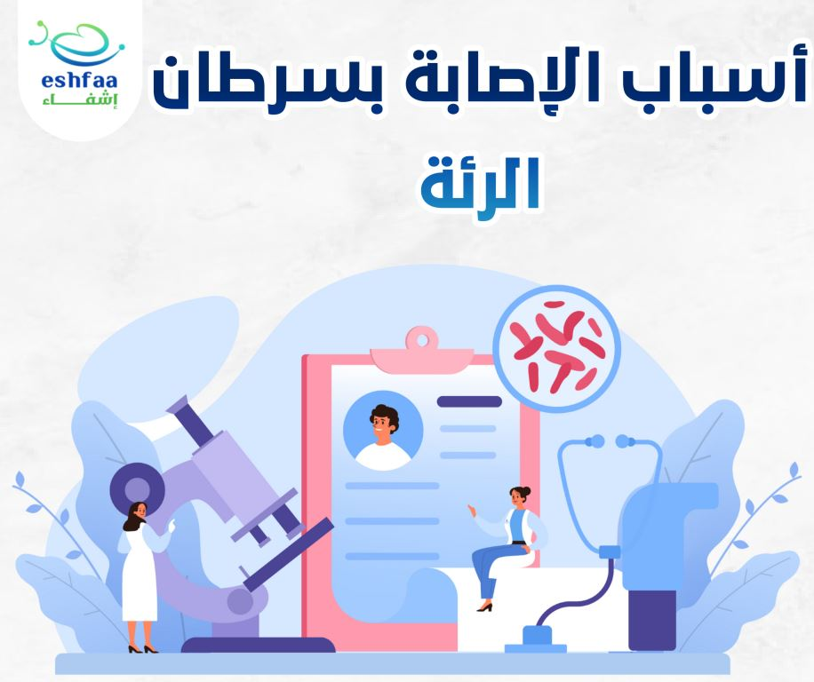
كل الأشخاص معرضون للاصابة بسرطان الرئة، ولكن وجد أن 90% من الاصابات ناتجة عن التدخين، فخلايا
الرئتين يتم تدميرها مع أول تعرض لخلايا الرئة لدخان السجائر الملئ بالمواد المسرطنة، وهنا تزداد
فرصة الاصابة بالمرض.
قد يكون جسمك في البداية قادر على التعامل مع التدمير والتغير الذي يحدث في خلايا الرئتين، ولكن
مع التعرض المتكرروالمستمر للتلف الناتج عن دخان السجائر، تتغير طبيعة الخلايا بشكل غير طبيعي
مؤديا الى تكون الخلايا السرطانية.
والاقلاع عن التدخين في أي مرحلة حتى وان طالت المدة، يقلل من نسبة الاصابة بسرطان الرئة.
ومن عوامل الخطر التي تزيد من معدل الاصابة:
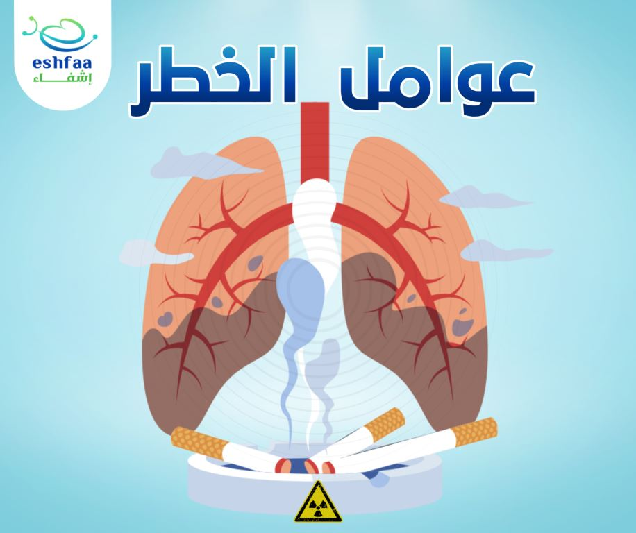
- استنشاق بعض الغازات والمواد المسرطنة مثل، الزرنيخ والكروم والنيكل.
- وجود بعض الطفرات الجينية.
- العلاج الاشعادي المستخدم في علاج بعض السرطانات الأخرى يمكن أن يزيد من معدل الاصابة بسرطان الرئة.
- التدخين السلبي.
- وجود تاريخ مرضي ببعض الأمراض المزمنة التي تصيب الرئة مثل، التدرن والالتهاب الرئوي المزمن والتهاب الشعب الهوائية المزمن.
ما هى أنواع سرطان الرئة؟
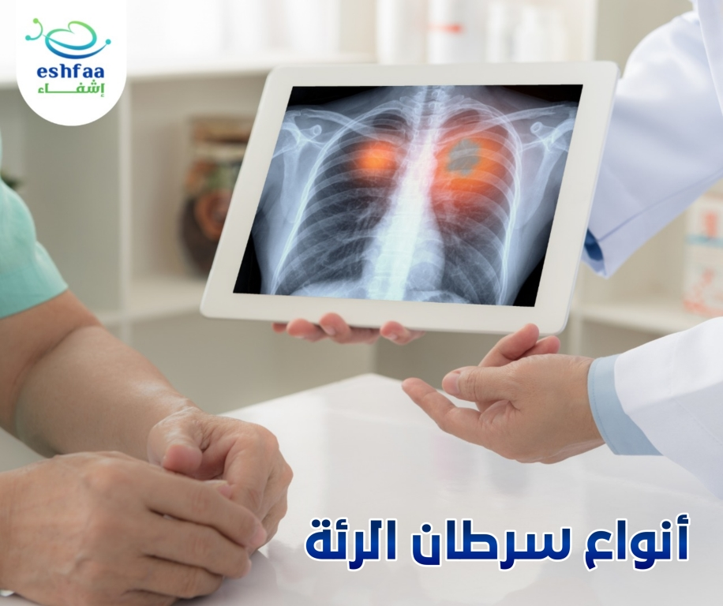
يوجد العديد من أنواع سرطان الرئة ومنها:
1_ سرطان الرئة ذو الخلايا الغير صغيرة:
ويمثل 80_85% من أنواع سرطان الرئة، وينقسم الى العيد من الأنواع، أكثرهم يستجيب بصورة كبيرة
للعلاج اذا تم تشخيصه في المراحل الأولى من المرض.
2_ سرطان الرئة ذو الخلايا الصغيرة:
يمثل حوالي 15-20 % من أنواع سرطان الرئة، ويعتبر أكثر خطورة من سرطان الرئة ذو الخلايا الغير
صغيرة.
كيف يتم تشخيص سرطان الرئة؟
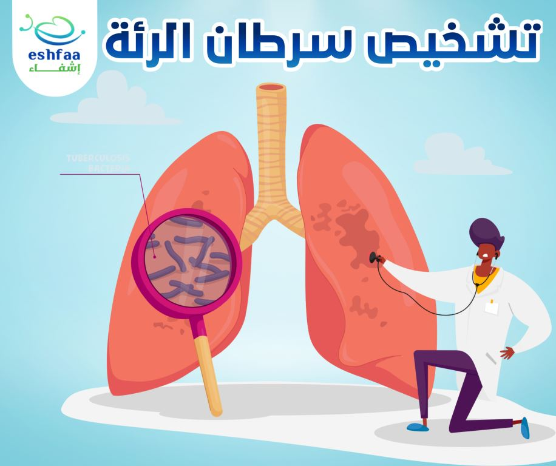
اذا ظهرت عليك أعراض من التي تم ذكرها مسبقا أو كان لديك بعض عوامل الخطورة التي يمكن أن تزيد من
الاصابة بسرطان الرئة، فبالتأكيد ستذهب لزيارة الطبيب للاطمئنان.
ويبدأ تشخيص سرطان الرئة بفحص الطبيب للمريض ومعرفة الأعراض وأخذ التاريخ المرضي كاملا، وفي حالة
الشك في الاصابة بالمرض سيتطلب ذلك اجراء بعض الفحوصات الاخرى لاثبات أو نفي الاصابة.
1. فحص كيمياء الدم.
2. فحص تركيز غازات الدم.
3. الفحوصات التصويرية: والتي يمكن من خلالها اكتشاف كتل الورم
- التصوير بالأشعة السينية.
- التصوير بالرنين المغناطيسي.
- التصوير بالأشعة المقطعية .
4. منظار القصبة الهوائية:والذي يتيح فرصة لفحص خلايا الرئة عن قرب.
5. الفحص المخبري للبلغم المصاحب للسعال.
6. أخذ عينة نسيجية من الرئة لفحصها تحت الميكروسكوب وتحديد ما اذا كانت الخلايا سرطانية ام لا.
7. اذا كانت نتيجة فحص العينة ايجابية، فذلك سيستدعي عمل مسح ذري للعظام لتحديد مرحلة المرض ومدى
انتشاره.
وهنا يأتي دور التشخيص المبكر لسرطان الرئة
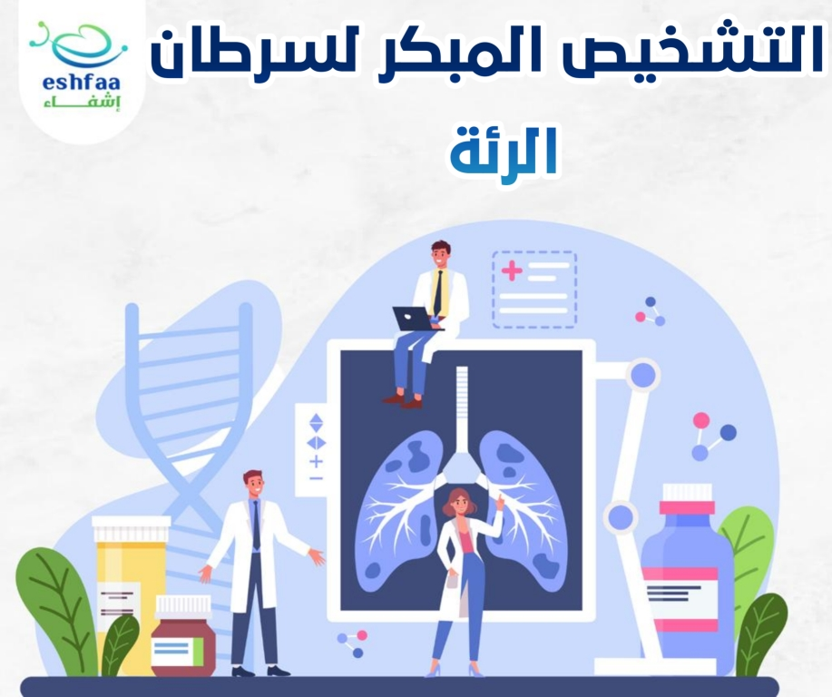
يجب على الأشخاص المعرضين بشكل أكبرللاصابة بسرطان الرئة، اجراء فحص سنوي عن طريق التطوير بالاشعة
المقطعية وذلك للأشخاص الاتية:
- من هم في سن 50 ل80 عام.
- المدخنين.
- من سبق وتوقف عن التدخين خلال اخر 15 عام.
علاج سرطان الرئة
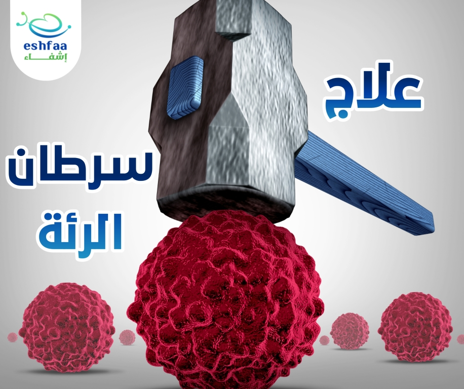يعتمد البرنامج العلاجي لسرطان الرئة على عدة عوامل، يضع على أساسها الطبيب المعالج البرنامج المناسب لكل مريض، ومن هذة العوامل ما يلي:
- عمر المريض.
- الحالة الصحية العامة.
- نوع سرطان الرئة.
- مرحلة المرض.
- مدى انتشاره.
- موضع الورم وحجمه.
1. التدخل الجراحي:
التدخل الجراحي من أول الاختيارات خاصة لذا كان المرض في المرحلة الأولى أو الثانية، فيتم استئصال
الورم وجزء من الخلايا السليمة من حوله ، ويمكن أيضا أن يتم ازالة العقد الليمفاوية لفحصها.
أما بالنسبة للعلاج الكيميائي أو الاشعاعي فيستخدم قبل الجراحة في حالة كبر حجم الورم لتقليص حجمه
قبل استئصاله، ويمكن أن يستخدم أيضا بعد التدخل الجراحي اذا كان هناك فرصة لعودة الخلايا
السرطانية مرة أخرى.
2. العلاج الاشعاعي:
يتم استخدام حزما طاقة مرتفعة من الأشعة السينية والبروتونات ويتم توجيهها لنقاط دقيقة من الجسم
لتدمير الخلايا السرطانية.
وقد يساعد في التخفيف من الأعراض المصاحبة للسرطان مثل الألم، ويتم استخدامه قبل أو بعد الجراحة
وعادة ما يصاحبه العلاج الكيميائي.
3. العلاج الكيميائي:
عبارة عن أدوية معينة تؤخذ عن طريق الفم أو يتم حقنها في الوريد لقتل الخلايا السرطانية، ويتم
استخدامة بعد الجراحة لقتل أي خلايا سرطانية متبقية ولمنع معادوة انتشارها مرة أخرى.
4. العلاج المناعي:
في بعض مراحل السرطان المتقدمة قد يعجز الجهاز المناعي في الجسم عن مواجهة الخلايا السرطانية التي
تعتمد طريقة للهروب من الجهاز المناعي، ففي هذه الحالات يتم اللجوء للعلاج المناعي لمساعدة الجسم
في السيطرة على المرض.
5. الرعاية التلطيفية:
يتسبب سرطان الرئة والأثار الجانبية للعلاجات في أعراض حادة ومؤلمة للمرضى مما يلزم التركيز على
بعض طرق العلاج لتخفيف حدة هذه الأعراض.
فالاضافة الى أنه يمكن للأشخاص في المراحل المتقدمة من المرض أن يختاروا عدم استكمال خطة العلاج،
فهنا يأتي دور الرعاية التلطيفية في تخفيف أعراض المرض وليس معالجة السرطان نفسه.
فرص النجاة ونسبة الشفاء من سرطان الرئة
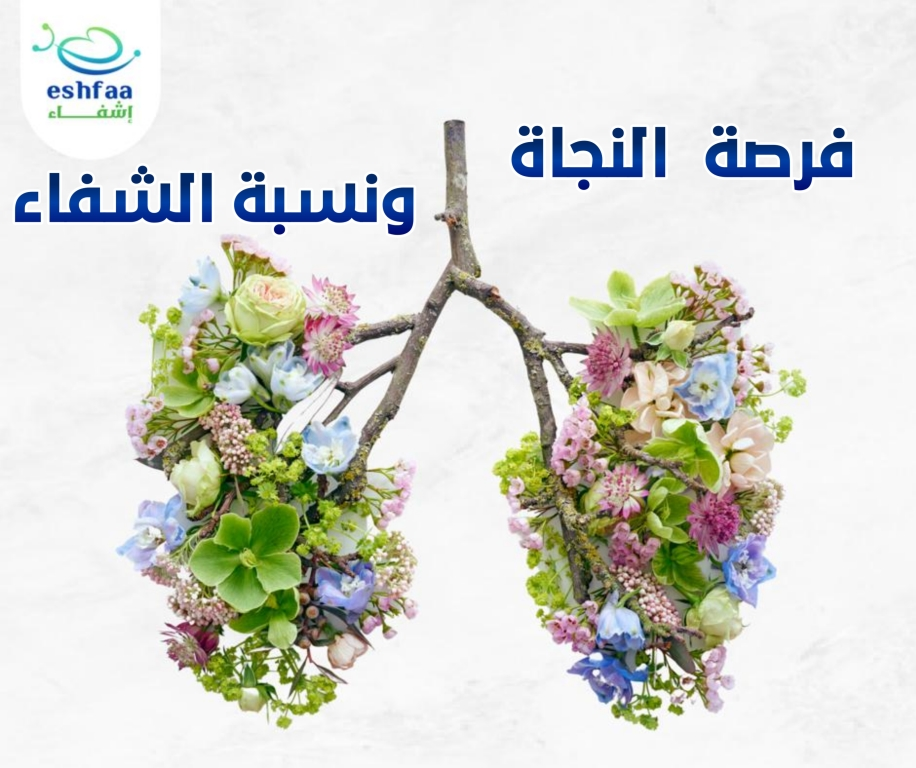
دائما التشخيص المبكر لأي مرض يرفع من نسبة الشفاء، وكذلك الأمر في حالة سرطان الرئة.
وفرصة النجاة من سرطان الرئة عامة تعتمد على نوع السرطان ومرحلته حين تم اكتشافه، ويعتمر طول عمر
مريض سرطان الرئة على سنه وحالته الصحية العامة ومدى استجابة المرض للعلاج.
لذا اذا تم الكشف المبكر عن سرطان الرئة وتلقى المريض العلاج المناسب لحالته فذلك يرفع نسبة
الشفاء وفرصة النجاة لمدة خمس سنوات الي 50-53 %
ما هى مضاعفات سرطان الرئة؟
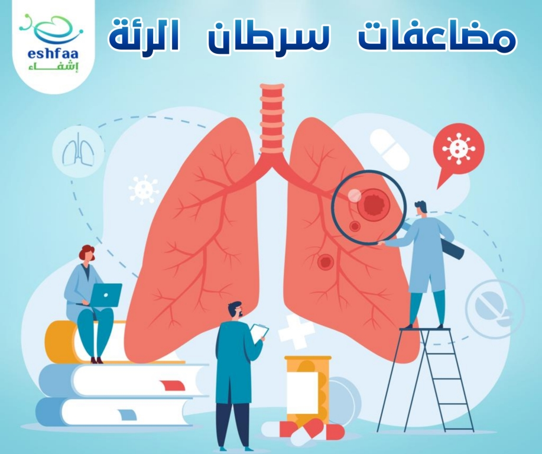
- تكرار الاصابة بعدوى الجهاز التنفسي مثل الالتهاب الرئوي.
- زيادة معدل تجلط الدم وزيادة فرصة الاصابة بجلطات الرئة.
- زيادة مستوى الكالسيوم في الدم.
- الضغط على العمود الفقري، مما ينتج عنه ألم ومشاكل في الحركة.
- زيادة الضغط على عضلة القلب مما يؤدي الى فشلها.
- التأثير على الأعصاب وظهور أعراض مثل التنميل.
- صعوبة في البلع بسبب انتشار المرض الى المرئ./li>
- تورم في الوجه.
الوقاية من سرطان الرئة
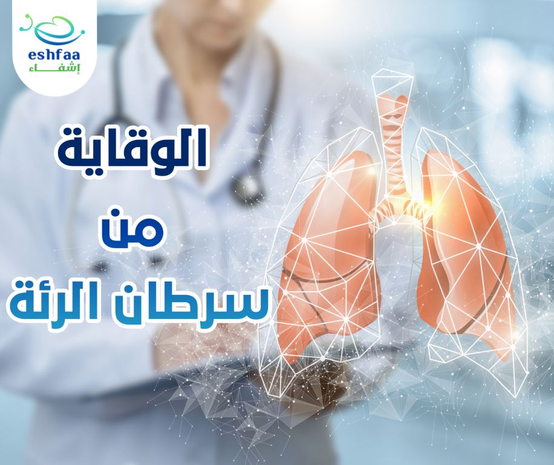
يمكنك تقليل خطر الاصابة بسرطان الرئة عن طريق اتباع بعض من النصائح الاتية:
- الاقلاع عن التدخين.
- تجنب التعرض للمواد المسرطنة والاشعاعات.
- اتباع نظام غذائي صحي.
- ممارسة الرياضة والتخلص من الوزن الزائد.